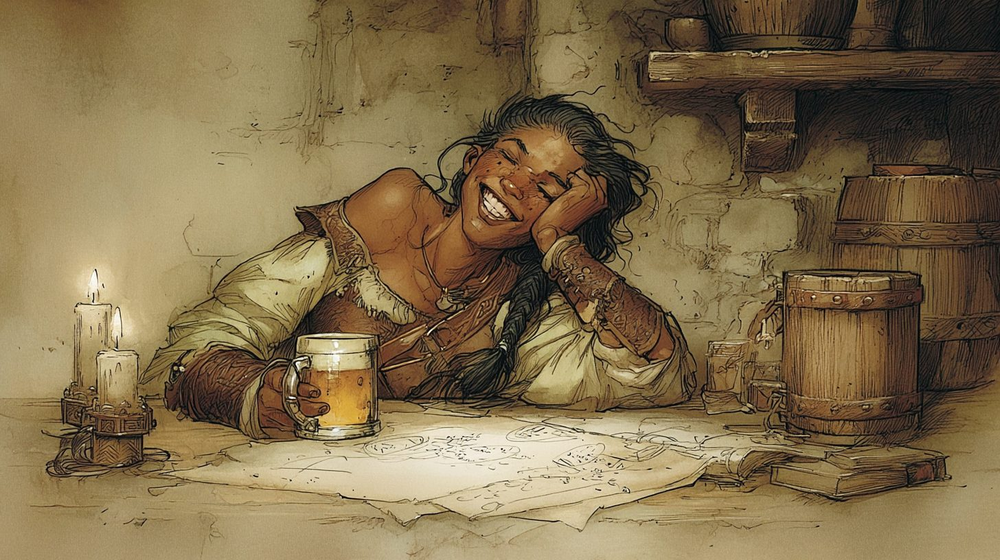
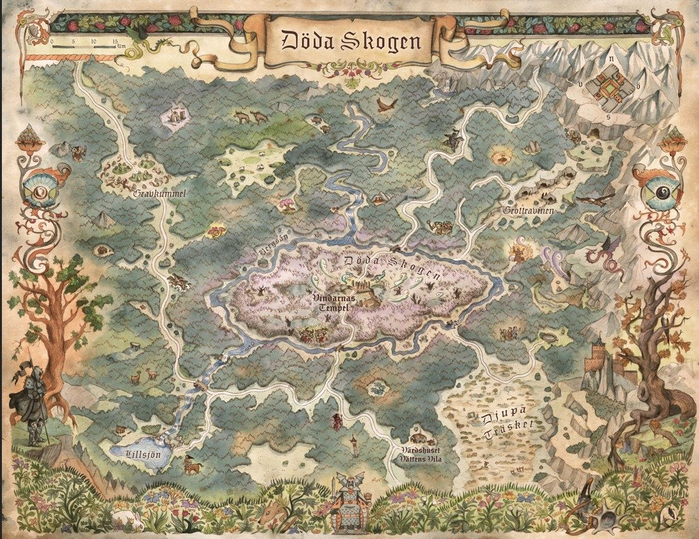

II. Vättens vila

Jag skriver det här med ett huvud som bankar och ett samvete som inte gör det. Prioriteringen känns rätt.
Trollskogen gav oss ingenting att tala om, vilket jag väljer att se som en gåva. Vättens vila tog emot oss, en värd som heter Assar och öl nog att dränka en lång väg. Brago gjorde det Brago gör: log mot allihop och litade på vartenda ansikte i rummet. Han bjöd in två bröder, Ivil och Filundrus, i sällskapet innan kvällen var slut. De hade en finare karta än vår och stora planer på Gravkummel i nordväst. En köpman, Drevil, sörjde högt en last vin han mist i nordöst. Var och en sin sorg.
Jag ska vara ärlig, för den här boken om ingen annan: jag drack för mycket och tyckte att bröderna var sällskap nog för en natt. Båda två. Döm mig en annan gång, jag var trött och de var villiga.
Men jag glömde aldrig varför jag satt vid deras bord. När de somnat tog jag fram skuggbläcket och kopierade kartan, linje för linje, och lät originalet ligga kvar. Jag stjäl inte gärna. Jag föredrar att veta det andra vet, och låta dem tro att de är ensamma om det.
Gravkummel, i nordväst. Nu vet jag vägen. Snart vet jag varför.
